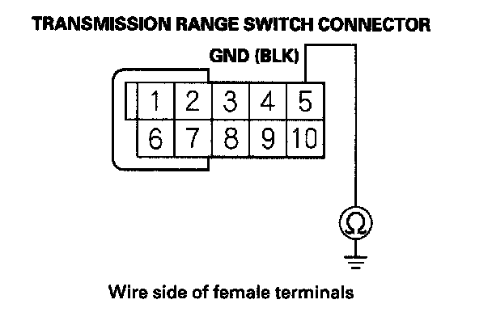
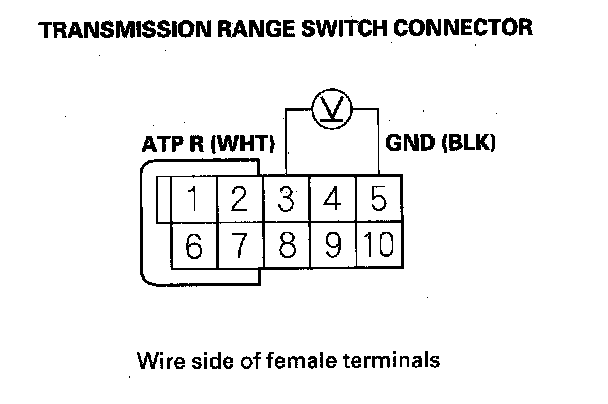
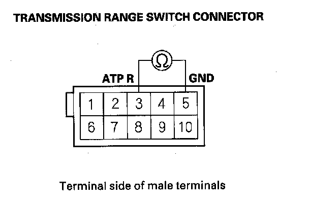

DTC Troubleshooting
DTC P0812: Open in Transmission Range Switch ATP R Switch CircuitNOTE:
^ Before you troubleshoot, record all freeze data and any on-board snapshot, and review General Troubleshooting Information.
^ This code is caused by an electrical circuit problem and cannot be caused by a mechanical problem in the transmission.
1. Turn the ignition switch ON (II).
2. Shift to the R position, and verify the A/T R SWITCH signal with the HDS in the A/T data list.
Is the A/T R SWITCH ON?
YES - Intermittent failure, the system is OK at this time.
NO - Go to step 3.
3. Turn the ignition switch OFF.
4. Disconnect the transmission range switch connector.
5. Check for continuity between transmission range switch connector terminal No. 5 and body ground.

Is there continuity?
YES - Go to step 6.
NO - Repair open in the wire between transmission range switch connector terminal No. 5 and ground (G101) or repair poor ground (G101) then go to step 14.
6. Turn the ignition switch ON (II).
7. Measure the voltage between transmission range switch connector terminals No. 3 and No. 5.

Is there voltage?
YES - Go to step 8.
NO - Repair open in the wire between PCM connector terminal C25 and the transmission range switch, then go to step 14.
8. Check for continuity between transmission range switch connector terminals No. 3 and No. 5 while the shift lever is in each position.

Is there continuity while the shift lever is in the P, R, and N positions, and no continuity while the shift lever is in the D and D3?
YES - Check for poor connections and loose terminals at the transmission range switch and the PCM. If the connections are OK, go to step 9.
NO - Replace the transmission range switch then go to step 9.
9. Reconnect the transmission range switch connector.
10. Update the A/T software in the PCM if it does not have the latest software or substitute a known-good PCM.
11. Test-drive the vehicle in the R position at speeds below 3 mph (5 km/h) for more than 2 seconds, then increase the speed and test-drive at speeds over 3 mph (5 km/h) for more than 2 seconds. Slow down and stop the wheels.
12. Check for DTC(s) in the DTCs/Freeze Data in A/T Mode Menu with the HDS.
Is DTC P0812 indicated?
YES - If the PCM was updated, substitute a known-good PCM then recheck. If the PCM was substituted, go to step 1.
NO - Go to step 13.
13. Monitor the OBD STATUS for P0812 in the DTCs/Freeze Data in A/T Mode Menu for a pass/fail.
Does the result indicate PASSED?
YES - If the PCM was updated, troubleshooting is complete. If the PCM was substituted, replace the original PCM. If any other DTCs were indicated on step 12, go to the indicated DTC's troubleshooting.
NO - If the HDS indicates FAILED, check for poor connections and loose terminals at the transmission range switch and the PCM. If the PCM was updated, substitute a known-good PCM then recheck. If the PCM was substituted, go to step 1. If the HDS indicates NOT COMPLETED, return to step 11 and recheck.
14. Clear the DTC with the HDS.
15. Test-drive the vehicle in the R position at speeds below 3 mph (5 km/h) for more than 2 seconds, then increase the speed and test-drive at speeds over 3 mph (5 km/h) for more than 2 seconds. Slow down and stop the wheels.
16. Check for DTC(s) in the DTCs/Freeze Data in A/T Mode Menu with the HDS.
Is DTC P0812 indicated?
YES - Check for poor connections and loose terminals at the transmission range switch and the PCM, then go to step 1.
NO - Go to step 17.
17. Monitor the OBD STATUS for P0812 in the DTCs/Freeze Data in A/T Mode Menu for a pass/fail.
Does the result indicate PASSED?
YES - Troubleshooting is complete. If any other DTCs were indicated on step 16, go to the indicated DTC's troubleshooting.
NO - If the HDS indicates FAILED, check for poor connections and loose terminals at the transmission range switch and the PCM, then go to step 1. If the HDS indicates NOT COMPLETED, return to step 15 and recheck.